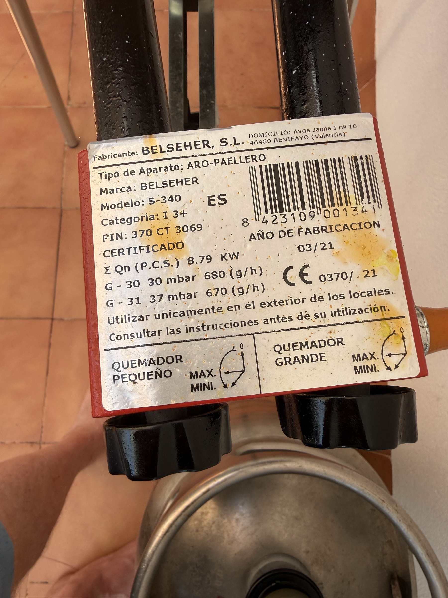

Binnenkort meer…
De website van Hugo's Paella is nog in aanbouw. Maar een website over paella beginnen zonder alvast een paella te laten zien? Dat kan natuurlijk niet.
Stay tuned for more…
Zojuist hier in Spanje een authentieke, maar eenvoudige Paella Valenciana gemaakt. Als voorproefje laat ik je stap voor stap zien hoe ik hem heb bereid.

Ik wilde het vandaag eenvoudig houden, dus gewoon naar de lokale Spar hier in Tarragona.
Voor de ingrediënten voor een paella voor minstens vier personen was ik uiteindelijk maar zo'n €25 kwijt. De andere artikelen op de kassabon zijn onder andere vaatwastabletten — dat moet tenslotte ook gebeuren. 😉
De slager sneed het halve konijn en de kip meteen voor me in mooie stukken. Mét bot, zoals het hoort.

Eerst alles klaargezet, gewassen en gesneden. Een goede voorbereiding maakt het straks een stuk makkelijker.
En uiteraard: een biertje voor de kok.


Vervolgens de paellabrander klaargezet. Ik controleer altijd eerst even beide branderringen voordat de pan erop gaat.
De juiste hitte is cruciaal bij het maken van paella. Tijdens de verschillende fases wil je het vuur snel hoger of lager kunnen zetten.


Een flinke scheut olijfolie in de pan en dan de stukken kip en konijn erin — nog steeds mét bot.
Bak het vlees op middel- tot hoog vuur en geef het de tijd. Reken op ongeveer 20 tot 25 minuten, zodat het rondom mooi bruin en gekarameliseerd wordt.
Niet te snel willen gaan. Hier begint de smaak van je paella.


Schuif het vlees naar de buitenkant van de pan en voeg de groenten in het midden toe.
Bak ze ongeveer 5 minuten, totdat ook de groenten wat kleur beginnen te krijgen.

Schuif ook de groenten wat naar de kant en voeg de tomaat toe.
Formeel horen de tomaten gepeld te zijn, maar eerlijk gezegd laat ik de schil er meestal gewoon aan.
Bak de tomaat goed in de olijfolie en alle sappen die inmiddels in de pan zitten.


Voeg de zoete paprikapoeder toe en roer hem snel door de olijfolie en de sappen in de pan.
Laat het kort karameliseren, maar wacht daarna niet te lang met het toevoegen van het water. Paprikapoeder kan snel verbranden en dan wordt hij bitter.


Voeg het water toe. En ja: dat is behoorlijk veel.
Voor ongeveer 500 gram rijst gebruik ik zo'n 2,5 tot 3 liter water. Dat lijkt misschien overdreven, maar een groot deel daarvan gaat nog verdampen.
Laat het geheel nu ongeveer 25 minuten rustig koken.
Dit is een belangrijke fase: het water neemt de smaken van de kip, het konijn, de groenten en alles wat we in de pan hebben opgebouwd op. Zo maken we in feite onze bouillon gewoon rechtstreeks in de paellapan.

Nadat de bouillon ongeveer 25 minuten heeft gekookt, kan de rijst erbij.
Verdeel de rijst zo gelijkmatig mogelijk over de hele pan. Ik gebruik hiervoor Bomba-rijst: de typische korte, ronde Spaanse rijstkorrel die veel van de bouillon en dus ook veel smaak kan opnemen.
Laat de rijst eerst ongeveer 8 minuten op hoog vuur koken en daarna nog ongeveer 8 minuten op laag vuur.
Deze keer ging het precies goed. Is het vocht al verdwenen terwijl de rijst nog niet gaar is, dan kun je eventueel nog een beetje water toevoegen.

Vuur uit.
En nu vooral even niets doen.
Laat de paella minstens 5 minuten rusten. Tien minuten mag ook.
Die rusttijd hoort erbij en geeft de rijst de kans zich mooi te zetten.


En klaar is de paella.
Dan ontbreekt er eigenlijk nog maar één ding: een mooie wijn. Deze keer ging er een prachtige Priorat open, afkomstig uit het achterland hier bij Tarragona.
Traditioneel wordt paella gezamenlijk gegeten, rechtstreeks uit de pan en ieder met zijn eigen lepel. Maar hem netjes op je eigen bord scheppen mag natuurlijk ook.
Het belangrijkste is dat je er samen van geniet.